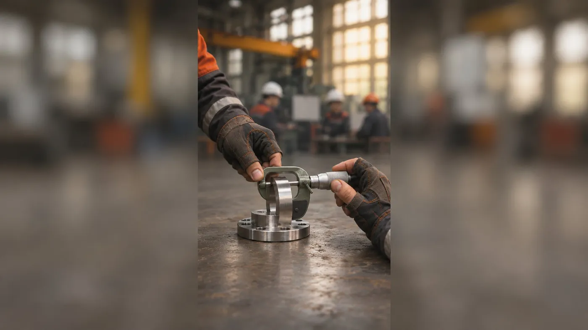
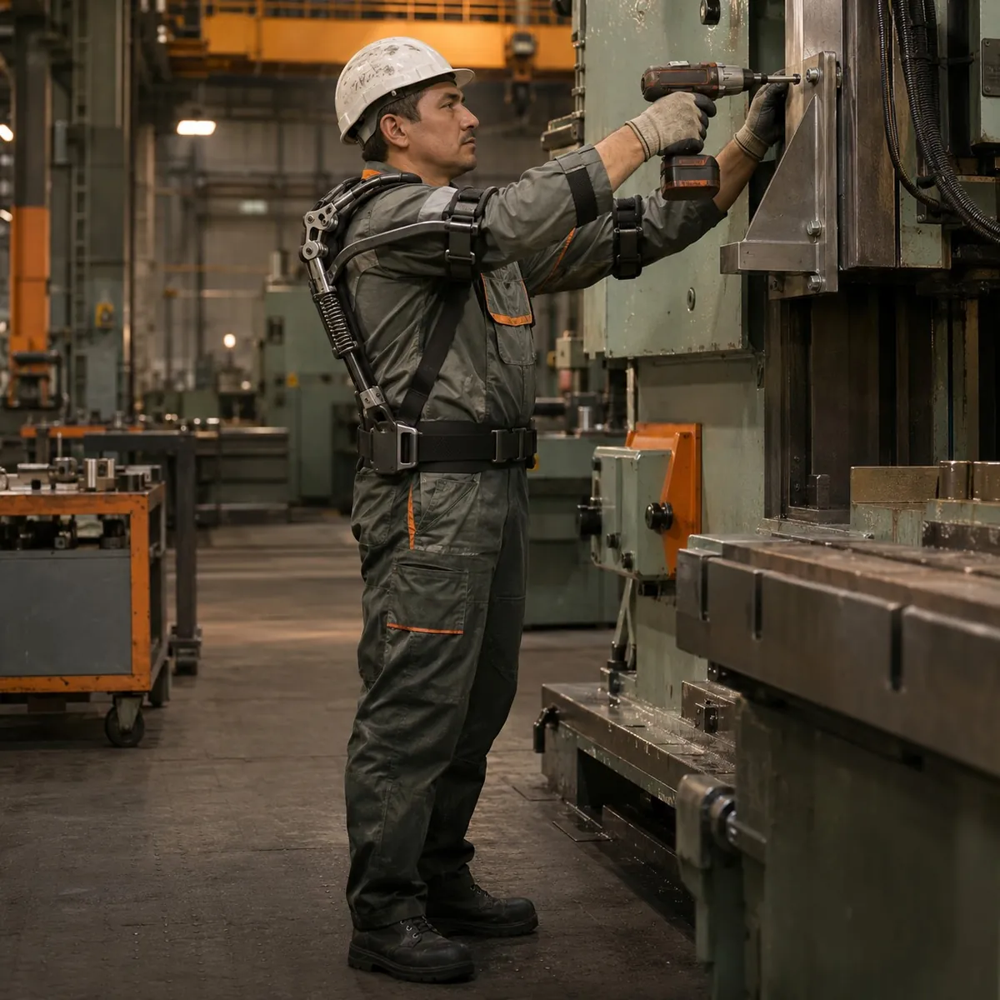

Российский промышленный форум · Уфа · 18.11.2026Кадры для промышленности будущего
Жёсткие, мягкие
и ИИ-мышление
Третий навык кадров будущего
Альберт Валеевоснователь школы ИИ neovida.ai
Комитет ТПП РБ по цифровому развитию, роботизированным решениям и трансформации бизнеса
Пауза, пока представляют. Первая фраза: «Коллеги сегодня рассказывают про нейросети, агентов, базу знаний и проверку ответов ИИ. Я расскажу, на чём всё это держится».
Жёсткие, мягкие и ИИ-мышление02 / 21
Спикер
Альберт Валеев
Эксперт по внедрению ИИ в бизнес, основатель школы ИИ neovida.ai, автор методики «ИИ-мышление»
2000+человек прошли обучение
20+проектов внедрения ИИ в бизнес
ТПП РБКомитет по цифровому развитию, роботизированным решениям и трансформации бизнеса
КомпанииОбучаем сотрудников на их рабочих задачах и внедряем ИИ в процессы
ГоссекторМинцифры РБ, МФЦ РБ. Благодарность министра цифрового развития РБ
МедиаАвтор и ведущий «ИИ. Новая реальность» на радио «Комсомольская правда»
Коротко представься от Комитета ТПП РБ. Скажи, что обучаем в компаниях и госсекторе на реальных задачах разных подразделений. Дальше задаём вопрос залу.
Жёсткие, мягкие и ИИ-мышление03 / 21
Вопрос залу
Кто за последний месяц применял ИИ в работе?
А кого этому учила компания?
35%
среди опрошенных пользователей ИИ на работе сказали, что компания их обучает
Подними руку сам и дай залу ответить на оба вопроса. По опросу «МТС Линк», только 35% из тех, кто применял ИИ на работе, сообщили об обучении от работодателя. Это опрос по России, не отдельный замер по предприятиям. Главный вопрос: чему учить, чтобы навык остался после обучения?
Жёсткие, мягкие и ИИ-мышление04 / 21

Ловушка
Учим кнопкам, а кнопки меняются
11 летсредний возраст оборудования в машиностроении на конец 2024 года
100+заметных моделей за 2025 год в базе Epoch AI. Около двух в неделю
Учить кнопкам нейросети, как учить работать на станке, который через месяц заменят
Станок служит годы. Интерфейсы ИИ меняются гораздо быстрее. Если курс построен вокруг одной программы, его приходится переделывать вместе с ней.

01ЖёсткиеЧитаю чертёж, считаю себестоимость, проверяю допуск

02МягкиеДоговариваюсь с другими службами и объясняю решение
03ИИ-мышлениеСтавлю задачу, разбираю варианты, проверяю решение
Жёсткий навык: прочитать чертёж или сравнить коммерческие предложения. Мягкий: договориться между службами. Третий: поставить задачу ИИ, рассмотреть его варианты и проверить результат. Это относится к мастеру, инженеру, специалисту по закупкам и руководителю.
Жёсткие, мягкие и ИИ-мышление06 / 21

Смысл ИИ-мышления
У привычной задачи есть другие решения
Как принято у насОтдел решает повторяющуюся задачу способом, к которому привык
Что добавляет ИИПредлагает несколько подходов. Сотрудник сравнивает их по условиям своей задачи
Первый навык: допустить, что привычный способ можно улучшить
Возьмём две задачи: передать смену и сравнить предложения поставщиков. ИИ можно попросить предложить способы, объяснить плюсы каждого и указать, где он не сработает. Мастер или снабженец выбирает вариант по своим условиям и забирает в практику способ, который ему подошёл. Начать можно с вопроса: какие ещё способы здесь возможны?
Жёсткие, мягкие и ИИ-мышление07 / 21
Диагностическое рассуждение • медианный балл
Доступ к ИИ почти не изменил результат врачей
Врачи без ИИ74%Обычные справочные ресурсы
Врачи с ИИ76%Те же ресурсы и доступ к модели
Модель отдельно92%Дополнительный анализ на тех же задачах
Попросите ИИ дать другую версиюПередайте контекст целиком в рамках правил. Затем сравните версии по фактам.
Медианный балл врачей был 74 без модели и 76 с ней. Разница статистически незначима. В отдельном анализе модель с заранее отработанным запросом набрала 92. Речь о разборе подготовленных случаев. Для предприятия я беру отсюда вопрос: даём ли мы альтернативной версии прозвучать и проверяем ли её по фактам? Исследование Goh и соавторов.
Жёсткие, мягкие и ИИ-мышление08 / 21
Как работает языковая модель
Откуда берётся уверенная ошибка
Модель предсказывает продолжение текста. Запрос служит ей подсказкой.
Запрос без контекста
«Составь рапорт об остановке станка».
«Станок остановился из-за перегрева».
Причина выдумана: в запросе нет данных.
Цель, контекст, форма ответа
«Составь рапорт. По журналу станок встал в 14:20. Укажи время и причину, если она известна».
«Остановка в 14:20. Причина пока неизвестна».
Время сверяем с журналом смены.
Цель и контекст направляют ответ. Факт сверяем по источнику.
Т9 на максималках, если очень грубо. Модель строит продолжение по тому, что уже есть в контексте. Здесь два учебных запроса к одной задаче. В первом модель могла бы придумать причину, во втором сотрудник дал запись из журнала и объяснил, что именно должно попасть в рапорт. Даже тогда важно сверить время и понять, кто будет уточнять причину. Профиль NIST о риске вымышленных фактов.
Жёсткие, мягкие и ИИ-мышление09 / 21
Методика Альберта Валеева
Четыре угла ИИ-мышления
01ПринципыБезопасностьВыбрать разрешённую модель и данные
Постановка задачиДать цель, контекст и критерий результата
ПроверкаСверить ответ с источником
02СмыслыНайти способ лучше привычногоРазобрать, как он работает, и забрать его в свою практику
03СценарииПрименить к рабочей задачеИтоги смены → черновик рапорта → сверка мастером
04ИнструментыВыбрать, чем сделать сегодняРазрешённая модель, утверждённый шаблон и регламент
Четыре угла вместе дают умение думать вместе с ИИ
Вот методика целиком. Принципы отвечают за устройство модели, безопасный доступ, постановку и проверку. Смыслы отвечают за пользу и за новый способ, который сотрудник забирает себе. Сценарии доводят до рабочих действий. Инструменты идут последними: разрешённая модель, утверждённый шаблон и регламент. За выпущенный результат отвечает человек.
Жёсткие, мягкие и ИИ-мышление10 / 21
Два способа работать с ИИ
Когнитивный экзоскелет

Надел и работаешьСравниваешь варианты, проверяешь и осваиваешь новый способ.
Лёг и лежишьПринимаешь готовый ответ. Без практики навык слабеет.
Один и тот же экзоскелет. В первом кадре человек работает и становится сильнее. Во втором он пропускает практику. С ИИ так же: когда я могу объяснить, что попросил, что изменил и как проверил, я учусь. И дальше вопрос для предприятия: почему человек сам вернётся к этому завтра?
Жёсткие, мягкие и ИИ-мышление11 / 21
После обучения
Почему сотрудник возвращается к ИИ
Понимает модель
Запрос задаёт направление. Если модель додумала факт, сотрудник знает, что уточнить и где сверить.
Умеет поставить задачу
Объясняет, чего хочет, даёт контекст и описывает, по каким признакам примет результат.
Видит пользу в своей работе
Видит, что экономит время или повышает качество. Знает, как повторить удачный ход.
Освоил навык, когда справился с новым случаем и объяснил, как проверил результат.
Почему после курса есть шанс, что человек продолжит? Он понимает, на что может повлиять, и тренируется на своей регулярной задаче. Например, специалист по закупкам сам сравнивает первые предложения, по ходу чинит запрос и сверяет вывод с исходными КП. На новом пакете он повторяет способ, видит, стал ли разбор быстрее и полнее. Если сотрудник справился и может объяснить ход, мы увидели навык. Дальше покажу, как он выглядит в разных службах.
Жёсткие, мягкие и ИИ-мышление12 / 21
Сценарии на предприятии
Один подход для разных служб
Производство
Передать смену. По записям выделить отклонения и открытые задачи.
Сверка с журналом и ответственными.
Инженерия и качество
Разобрать брак. Развести факты, гипотезы и недостающие замеры.
Сверка с протоколом и действующими ТУ.
Снабжение
Сравнить предложения. Вынести цену, сроки и условия в одну таблицу.
Сверка с исходными КП.
Кадры и обучение
Подготовить новичка. Собрать тренировочную задачу по инструкции.
Точность проверяет наставник.
Выбери два примера для этого зала. В каждом порядок один: чего хотим, какие данные можно дать, в каком виде ждём результат, с чем его сверяем. Руководитель проверяет, что навык действительно используется в подразделении и улучшает выбранный процесс.
Жёсткие, мягкие и ИИ-мышление13 / 21
Решение для предприятия
Единый стандарт работы с ИИ
Как закрепить навык
- Дать рабочую задачу
- Руководитель показывает на своём примере. Сотрудник решает новый случай сам.
- Проверить в работе
- Команда повторяет приём и сравнивает время и качество с обычным процессом.
О чём договориться всем
- Доступ и данные
- Какие сервисы разрешены и какие данные им можно передавать.
- Проверка, этика и ответственность
- По каким источникам сверяем. Отмечаем непроверенное. Решение утверждает ответственный сотрудник.
Для старта одна служба, одна повторяющаяся задача и один критерий качества.
Организация превращает личный навык в единый стандарт компании. В нём есть правила безопасности, требования к проверке и этика: честно отмечаем непроверенное, не выпускаем сырой ответ, знаем, кто принимает решение. Для пилота выбираем одну службу и регулярную задачу, фиксируем время и критерии качества до обучения, а потом сравниваем реальные результаты. Если способ прижился, используем тот же регламент в следующих службах.

Кадры для промышленности будущего
Кадры будущего
не нажимают кнопки.
Они думают вместе с ИИ.
Альберт Валеевоснователь школы ИИ neovida.ai
@neovidaAiTelegram
В конце вернись к главному. Кадры будущего умеют ставить задачу ИИ, учиться у него и проверять результат. Когда компания договаривается об общих правилах, это становится частью работы любой службы. Спасибо. Здесь конец основного доклада. Для вопросов можно открыть резерв через обзор G.
Жёсткие, мягкие и ИИ-мышление15 / 21
Это уже было с заводами
Мотор поставили.
Рост не пришёл
1900-еЭлектромотор ставят вместо паровой машины. Валы, ремни и работа людей прежние
1920-еРост приходит, когда у каждого станка свой мотор, цех перестроен, а рабочий обучен
Сегодня ИИ ставят вместо поисковика и ждут чуда
Заводы начали выигрывать, когда электромотор изменил устройство цеха. С ИИ тот же вопрос: какой рабочий процесс мы меняем после того, как выдали доступ?
Жёсткие, мягкие и ИИ-мышление16 / 21
Полевой эксперимент • 758 консультантов BCG
В одной задаче ИИ помог.
В другой снизил точность
Набор задач в пределах возможностей модели+30–34%к качеству работы у участников с ИИ
Отдельная сложная аналитическая задача−19 п. п.к доле верных решений у участников с ИИ
Запроси альтернативу. Проверь её по первичным данным.
На одном наборе задач качество выросло на 29,9% в группе с ИИ и на 33,9% в группе с ИИ и вводным инструктажем. На отдельной аналитической задаче доля верных решений с ИИ упала на 19 процентных пунктов. Для мастера два движения: дать альтернативе шанс и проверить её по фактам. Публикация в Organization Science.
Жёсткие, мягкие и ИИ-мышление17 / 21
Полевой эксперимент • около 1 000 школьников • математика
Что остаётся у ученика, когда ИИ выключили?
РежимИИ выдаёт решенияИИ даёт подсказки
Тренировка с ИИ+48%+127%
Контрольная без ИИ−17%Без значимой разницы
На заводе проверяйте навык: может ли сотрудник объяснить ход решения и повторить его?
Школьники с ИИ на тренировке получили более высокие баллы. Когда модель была свободна выдавать решения, на контрольной без неё балл оказался на 17% ниже контрольной группы. Настроенный режим подсказок эту потерю убрал, статистически значимого прироста на экзамене тоже не было. Для завода это принцип проверки обучения: дать новую задачу и попросить сотрудника объяснить свой ход. Исследование Bastani и соавторов.
Жёсткие, мягкие и ИИ-мышление18 / 21
Производственный сценарий
Мастер передаёт смену
ПринципыИспользует разрешённые данные. Сам сверяет факты и утверждает рапорт.
СмыслПередать следующей смене всё, что влияет на её работу.
СценарийДиктует события. Просит выделить отклонения, открытые задачи и пропуски.
ИнструментОдобренный сервис и шаблон рапорта участка.
Покажу один сценарий целиком. Мастер после смены диктует факты. Запрос: «Собери черновик рапорта. Вынеси открытые задачи в отдельный список. Укажи, где не хватает срока или ответственного». Мастер сверяет события с журналом, уточняет пропуски и отправляет рапорт. Так ИИ помогает заметить, что могло потеряться при передаче смены.
Жёсткие, мягкие и ИИ-мышление19 / 21
Передача опыта • исследование службы поддержки
ИИ помогает новичку перенять приёмы опытных
2месяца стажа с помощником
≈
6+месяцев стажа без помощника
По ряду показателей продуктивности в службе поддержки.
В цехе: наставник показывает ход, ИИ даёт тренировочный случай, новичок объясняет решение.
В службе поддержки сотрудники с двухмесячным стажем и ИИ по ряду показателей работали на уровне коллег с опытом более шести месяцев без ИИ. Для цеха это идея, а не прогноз: мастер фиксирует проверенные приёмы, ИИ помогает их отработать, новичок объясняет свой ход. Исследование.
Жёсткие, мягкие и ИИ-мышление20 / 21
Как мы это проектируем • пилот
МФЦ Республики Башкортостан
01РегламентыИнструкции по сложным услугам
02ПомощникПодсказывает сотруднику, на какой пункт опереться
03ТренажёрДаёт новичку практику на сложных обращениях
Для завода: инструкции цеха, наставник, тренажёр
На пилоте МФЦ устройство такое: справочные ответы опираются на регламент, а отдельный тренажёр позволяет новичку отработать сложную ситуацию. На заводе та же связка начинается с действующей инструкции и проверенного примера от наставника.
Жёсткие, мягкие и ИИ-мышление21 / 21
Национальная стратегия развития ИИ
80%
работников с навыками ИИ к 2030 году
5%было в 2022 году
Февраль 2026 · поручение Пр-270ГСВнести ИИ-компетенции в профстандарты и ФГОС, сделать с работодателями отраслевые программы повышения квалификации
Вопрос «учить ли» закрыт.
Остался вопрос «чему учить».
До 2030 года четыре года. За это время 8 из 10 работников должны уметь работать с ИИ. И вот тут главная ловушка.